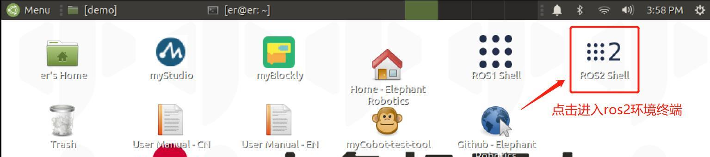
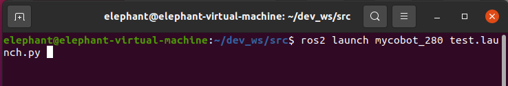
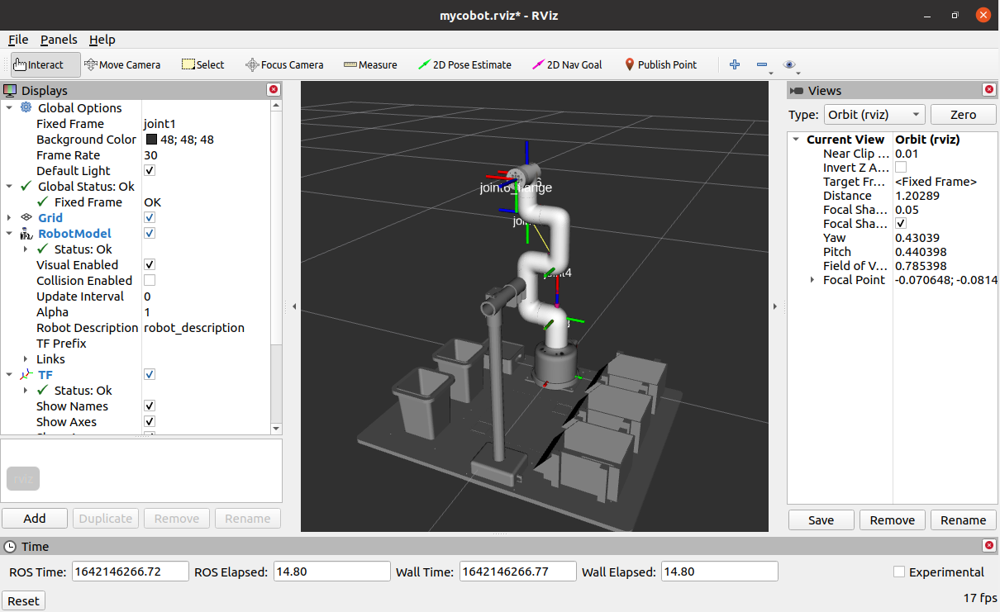
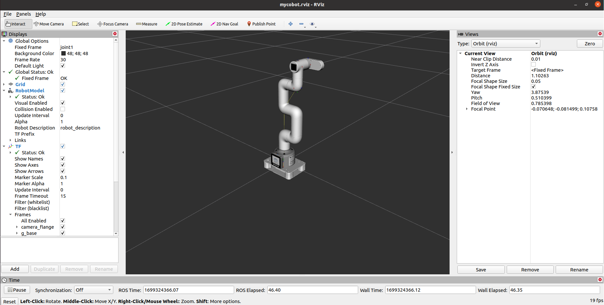

rviz2的简单介绍及使用
rviz是ROS中一款三维可视化平台，一方面能够实现对外部信息的图形化显示，另外还可以通过 rviz 给对象发布控制信息，从而实现对机器人的监测与控制。
1 rviz2的简介
ros2安装成功表明rviz2也一起安装成功了，因为ros2的安装包含了rviz2。
打开一个一个新的终端(快捷键Ctrl+Alt+T)输入命令打开rviz2
rviz2
打开rviz2,显示如下界面：

2 各个区域介绍
- 左侧为显示器列表，显示器是在3D世界中绘制某些内容的东西，并且可能在显示列表中具有一些可用的选项。
- 上方是工具栏，允许用户用各种功能按键选择多种功能的工具
- 中间部分为3D视图: 它是可以用三维方式查看各种数据的主屏幕。3D视图的背景颜色、固定框架、网格等可以在左侧显示的全局选项（Global Options）和网格（Grid）项目中进行详细设置。
- 下方为时间显示区域，包括系统时间和ROS时间等。
- 右侧为观测视角设置区域，可以设置不同的观测视角。
本部分我们只进行粗略的介绍，如果您想了解更多详细的内容，可以前往用户指南进行查看。
3 mycobot_ros2安装与更新
- PI版本(Ubuntu 20.04)：
mycobot_ros2 是 ElephantRobotics 推出的，适配旗下各类型桌面型机械臂的 ROS 包。
项目地址：https://github.com/elephantrobotics/mycobot_ros2
官方默认的工作空间是colcon_ws。
点击桌面上的ROS2 Shell图标或者桌面下方栏的对应图标，打开ROS2环境终端：



然后输入以下指令：
cd ~/colcon_ws/src # 进入工作区的src文件夹中
# 克隆github上的代码
git clone https://github.com/elephantrobotics/mycobot_ros2.git
cd .. # 返回工作区
colcon build --symlink-install # 构建工作区中的代码, --symlink-install：避免每次调整 python 脚本时都需要重新编译
source install/setup.bash # 添加环境变量
注意： 若/home/er/colcon_ws/src (等效于 ~/colcon_ws/src)目录中已经存在mycobot_ros2文件夹，则需要先删除原有的 mycobot_ros2，再执行以上命令。
4 简单使用
通过launch.py文件启动
本例子建立在您已经完成 环境搭建，并成功将本公司的代码从GitHub上复制下来的基础上。
打开一个控制台终端(快捷键Ctrl+Alt+T) 输入一下命令进行ROS2的环境配置。
cd ~/colcon_ws
colcon build --symlink-install
source install/setup.bash
再输入：
- mycobot 280-M5版本：
ros2 launch mycobot_280 test.launch.py

打开rviz2，并得到如下结果：

如果您想了解更多rviz的相关资料信息，您可以前往官方文档进行查看
机械臂的控制
1 滑块控制
打开一个命令行，运行：
- mycobot 280-M5版本：
# mycobot 280-M5版本默认串口名为"/dev/ttyUSB0"，波特率为115200.部分机型的串口名为 "dev/ttyACM0",若默认串口名发生错误，可将串口名改为"/dev/ttyACM0".
ros2 launch mycobot_280 slider_control.launch.py
- mycobot 280-PI版本：
点击桌面上的ROS2 Shell图标或者桌面下方栏的对应图标，打开ROS2环境终端：
然后运行命令：
# mycobot 280-PI版本默认串口名为"/dev/ttyAMA0"，波特率为1000000.
ros2 launch mycobot_280pi slider_control.launch.py
- mycobot 280-JetsonNano版本：
点击桌面上的ROS2 Shell图标或者桌面下方栏的对应图标，打开ROS2环境终端：
然后运行命令：
# mycobot 280-JetsonNano版本默认串口名为"/dev/ttyTHS1"，波特率为1000000.
ros2 launch mycobot_280jn slider_control.launch.py
它将打开 rviz 和一个滑块组件，你将看到如下画面（树莓派版本画面略有差异，不影响使用）：

接着你可以通过拖动滑块来控制 rviz 中的模型移动。真实的 mycobot 将跟着一起运动.
请注意：由于在命令输入的同时机械臂会移动到模型目前的位置，在您使用命令之前请确保rviz中的模型没有出现穿模现象 不要在连接机械臂后做出快速拖动滑块的行为，防止机械臂损坏
2 模型跟随
除了上面的控制，我们也可以让模型跟随真实的机械臂运动。打开一个命令行运行：
- mycobot 280-M5版本：
# mycobot 280-M5版本默认串口名为"/dev/ttyUSB0"，波特率为115200.部分机型的串口名为 "dev/ttyACM0",若默认串口名发生错误，可将串口名改为"/dev/ttyACM0".
ros2 launch mycobot_280 mycobot_follow.launch.py
- mycobot 280-PI版本：
点击桌面上的ROS2 Shell图标或者桌面下方栏的对应图标，打开ROS2环境终端：
然后运行命令：
# mycobot 280-PI版本默认串口名为"/dev/ttyAMA0"，波特率为1000000.
ros2 launch mycobot_280pi mycobot_follow.launch.py
- mycobot 280-JetsonNano版本：
点击桌面上的ROS2 Shell图标或者桌面下方栏的对应图标，打开ROS2环境终端：
然后运行命令：
# mycobot 280-JetsonNano版本默认串口名为"/dev/ttyTHS1"，波特率为1000000.
ros2 launch mycobot_280jn mycobot_follow.launch.py
它将打开 rviz 展示模型跟随效果。
3 GUI 控制
在前面的基础上，本包还提供了简单的 Gui 控制界面。 该方式意在于真实机械臂相互联动，请连接 mycobot。
打开命令行：
- mycobot 280-M5版本：
# mycobot 280-M5版本默认串口名为"/dev/ttyUSB0"，波特率为115200.部分机型的串口名为 "dev/ttyACM0",若默认串口名发生错误，可将串口名改为"/dev/ttyACM0".
ros2 launch mycobot_280 simple_gui.launch.py
- mycobot 280-PI版本：
点击桌面上的ROS2 Shell图标或者桌面下方栏的对应图标，打开ROS2环境终端：
然后运行命令：
# mycobot 280-PI版本默认串口名为"/dev/ttyAMA0"，波特率为1000000.
ros2 launch mycobot_280pi simple_gui.launch.py
- mycobot 280-JetsonNano版本：
点击桌面上的ROS2 Shell图标或者桌面下方栏的对应图标，打开ROS2环境终端：
然后运行命令：
# mycobot 280-JetsonNano版本默认串口名为"/dev/ttyTHS1"，波特率为1000000.
ros2 launch mycobot_280jn simple_gui.launch.py

4 键盘控制
在 mycobot_280 的包中添加了键盘控制的功能，并在 rviz 中实时同步。本功能依赖 pythonApi，所以确保与真实机械臂连接。
打开一个命令行，运行：
- mycobot 280-M5版本：
# mycobot 280-M5版本默认串口名为"/dev/ttyUSB0"，波特率为115200.部分机型的串口名为 "dev/ttyACM0",若默认串口名发生错误，可将串口名改为"/dev/ttyACM0".
ros2 launch mycobot_280 teleop_keyboard.launch.py
- mycobot 280-PI版本：
点击桌面上的ROS2 Shell图标或者桌面下方栏的对应图标，打开ROS2环境终端：
然后运行命令：
# mycobot 280-PI版本默认串口名为"/dev/ttyAMA0"，波特率为1000000.
ros2 launch mycobot_280pi teleop_keyboard.launch.py
- mycobot 280-JetsonNano版本：
点击桌面上的ROS2 Shell图标或者桌面下方栏的对应图标，打开ROS2环境终端：
然后运行命令：
# mycobot 280-JetsonNano版本默认串口名为"/dev/ttyTHS1"，波特率为1000000.
ros2 launch mycobot_280jn teleop_keyboard.launch.py
运行效果如下：

命令行中将会输出 mycobot 信息，如下：
[INFO] [launch]: All log files can be found below /home/elephant/.ros/log/2022-05-19-16-25-45-949761-elephant-virtual-machine-19111
[INFO] [launch]: Default logging verbosity is set to INFO
[INFO] [robot_state_publisher-1]: process started with pid [19114]
[INFO] [rviz2-2]: process started with pid [19116]
[INFO] [follow_display-3]: process started with pid [19118]
[robot_state_publisher-1] Parsing robot urdf xml string.
[robot_state_publisher-1] Link joint2 had 1 children
[robot_state_publisher-1] Link joint3 had 1 children
[robot_state_publisher-1] Link joint4 had 1 children
[robot_state_publisher-1] Link joint5 had 1 children
[robot_state_publisher-1] Link joint6 had 1 children
[robot_state_publisher-1] Link joint6_flange had 0 children
[robot_state_publisher-1] [INFO] [1652948746.290904045] [robot_state_publisher]: got segment joint1
[robot_state_publisher-1] [INFO] [1652948746.290967253] [robot_state_publisher]: got segment joint2
[robot_state_publisher-1] [INFO] [1652948746.290973124] [robot_state_publisher]: got segment joint3
[robot_state_publisher-1] [INFO] [1652948746.290977490] [robot_state_publisher]: got segment joint4
[robot_state_publisher-1] [INFO] [1652948746.290981670] [robot_state_publisher]: got segment joint5
[robot_state_publisher-1] [INFO] [1652948746.290985737] [robot_state_publisher]: got segment joint6
[robot_state_publisher-1] [INFO] [1652948746.290989943] [robot_state_publisher]: got segment joint6_flange
[follow_display-3] [INFO] [1652948746.664601707] [follow_display]: port:/dev/ttyUSB0, baud:115200
[rviz2-2] [INFO] [1652948746.828773551] [rviz2]: Stereo is NOT SUPPORTED
[rviz2-2] [INFO] [1652948746.830452458] [rviz2]: OpenGl version: 4.1 (GLSL 4.1)
[rviz2-2] [INFO] [1652948746.874021926] [rviz2]: Stereo is NOT SUPPORTED
[rviz2-2] Parsing robot urdf xml string.
接着，打开另一个命令行，运行：
- mycobot 280-M5版本：
ros2 run mycobot_280 teleop_keyboard
- mycobot 280-PI版本：
点击桌面上的ROS2 Shell图标或者桌面下方栏的对应图标，打开ROS2环境终端：
然后运行命令：
ros2 run mycobot_280pi teleop_keyboard
- mycobot 280-JetsonNano版本：
点击桌面上的ROS2 Shell图标或者桌面下方栏的对应图标，打开ROS2环境终端：
然后运行命令：
ros2 run mycobot_280jn teleop_keyboard
你会在命令行中看到如下输出：
Mycobot Teleop Keyboard Controller
---------------------------
Movimg options(control coordinations [x,y,z,rx,ry,rz]):
w(x+)
a(y-) s(x-) d(y+)
z(z-) x(z+)
u(rx+) i(ry+) o(rz+)
j(rx-) k(ry-) l(rz-)
Gripper control:
g - open
h - close
Other:
1 - Go to init pose
2 - Go to home pose
3 - Resave home pose
q - Quit
currently: speed: 10 change percent: 2
在该终端中，您可以通过命令行中的按键控制机械臂的状态和对机械臂进行移动操作。
5 末端执行器
- 支持的末端执行器： myCobot垂直吸泵V2.0、摄像头法兰
- 适用设备： myCobot 280 M5、myCobot 280 PI
5.1 myCobot垂直吸泵V2.0
1 加载模型
打开一个命令行，运行：
- mycobot 280-M5版本：
ros2 launch mycobot_280 test_pump.launch.py
- mycobot 280-PI版本：
点击桌面上的ROS2 Shell图标或者桌面下方栏的对应图标，打开ROS2环境终端：
然后运行命令：
ros2 launch mycobot_280pi test_pump.launch.py
它将打开 rviz，你将看到如下画面（树莓派版本画面略有差异，不影响使用）：

2 滑块控制
注意：该功能仅支持对机械臂的控制
打开一个命令行，运行：
- mycobot 280-M5版本：
# mycobot 280-M5版本默认串口名为"/dev/ttyUSB0"，波特率为115200.部分机型的串口名为 "dev/ttyACM0",若默认串口名发生错误，可将串口名改为"/dev/ttyACM0".
ros2 launch mycobot_280 slider_control_pump.launch.py
- mycobot 280-PI版本：
点击桌面上的ROS2 Shell图标或者桌面下方栏的对应图标，打开ROS2环境终端：
然后运行命令：
# mycobot 280-PI版本默认串口名为"/dev/ttyAMA0"，波特率为1000000.
ros2 launch mycobot_280pi slider_control_pump.launch.py
它将打开 rviz 和一个滑块组件，你将看到如下画面（树莓派版本画面略有差异，不影响使用）：

接着你可以通过拖动滑块来控制 rviz 中的模型移动。真实的 mycobot 将跟着一起运动.
请注意：由于在命令输入的同时机械臂会移动到模型目前的位置，在您使用命令之前请确保rviz中的模型没有出现穿模现象 不要在连接机械臂后做出快速拖动滑块的行为，防止机械臂损坏
3 GUI控制
在前面的基础上，本包还提供了简单的 Gui 控制界面。 该方式意在于真实机械臂相互联动，请连接 mycobot。
打开命令行：
- mycobot 280-M5版本：
# mycobot 280-M5版本默认串口名为"/dev/ttyUSB0"，波特率为115200.部分机型的串口名为 "dev/ttyACM0",若默认串口名发生错误，可将串口名改为"/dev/ttyACM0".
ros2 launch mycobot_280 simple_gui_pump.launch.py
它将打开rviz和一个GUI界面，你将看到如下画面：

5.2 摄像头法兰
1 加载模型
打开一个命令行，运行：
- mycobot 280-M5版本：
ros2 launch mycobot_280 test_camera_flange.launch.py
- mycobot 280-PI版本：
点击桌面上的ROS2 Shell图标或者桌面下方栏的对应图标，打开ROS2环境终端：
然后运行命令：
ros2 launch mycobot_280pi test_camera_flange.launch.py
它将打开 rviz，你将看到如下画面（树莓派版本画面略有差异，不影响使用）：

2 滑块控制
注意：该功能仅支持对机械臂的控制
打开一个命令行，运行：
- mycobot 280-M5版本：
# mycobot 280-M5版本默认串口名为"/dev/ttyUSB0"，波特率为115200.部分机型的串口名为 "dev/ttyACM0",若默认串口名发生错误，可将串口名改为"/dev/ttyACM0".
ros2 launch mycobot_280 slider_control_camera_flange.launch.py
- mycobot 280-PI版本：
点击桌面上的ROS2 Shell图标或者桌面下方栏的对应图标，打开ROS2环境终端：
然后运行命令：
# mycobot 280-PI版本默认串口名为"/dev/ttyAMA0"，波特率为1000000.
ros2 launch mycobot_280pi slider_control_camera_flange.launch.py
它将打开 rviz 和一个滑块组件，你将看到如下画面（树莓派版本画面略有差异，不影响使用）：

接着你可以通过拖动滑块来控制 rviz 中的模型移动。真实的 mycobot 将跟着一起运动.
请注意：由于在命令输入的同时机械臂会移动到模型目前的位置，在您使用命令之前请确保rviz中的模型没有出现穿模现象。 不要在连接机械臂后做出快速拖动滑块的行为，防止机械臂损坏。
5.3 摄像头法兰 && 吸泵
1 加载模型
打开一个命令行，运行：
- mycobot 280-M5版本：
ros2 launch mycobot_280 test_camera_flange_pump.launch.py
- mycobot 280-PI版本：
点击桌面上的ROS2 Shell图标或者桌面下方栏的对应图标，打开ROS2环境终端：
然后运行命令：
ros2 launch mycobot_280pi test_camera_flange_pump.launch.py
它将打开 rviz，你将看到如下画面（树莓派版本画面略有差异，不影响使用）：